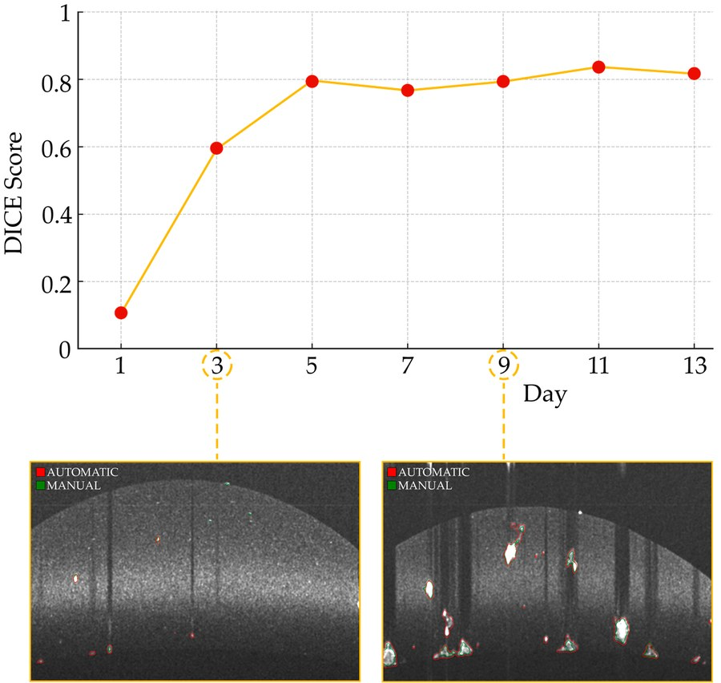

µm · MICRO3D tumour organoids
Segmentation and tracking in Optical Coherence Microscopy to study therapy response.
Publication →Deep learning and computational methods for biomedical image analysis.
“From in vitro to in vivo imaging: advanced computational methods for multi-scale biomedical image analysis.”
PhD in Bioengineering, Politecnico di Torino. Cum laude and top 10% according to the Board.

µm · MICROSegmentation and tracking in Optical Coherence Microscopy to study therapy response.
Publication →Wavelets and deep learning for low-energy acquisitions.
Publication → cm · MACRO
cm · MACROColour normalisation, super-resolution and quality assessment.
Clinical study →A selection of projects addressing quality, standardisation and quantitative analysis in biomedical imaging.
The thesis brings together methods for OCM/OCT, fluorescence microscopy and dermoscopy. CNNs, wavelets and GANs address segmentation, tracking, noise, autofluorescence, colour variability and super-resolution, from the cellular to the macroscopic scale.
Read the abstract →A pipeline simulates blur, noise, downsampling and compression to train DermaSR-GAN on realistically degraded dermoscopic images.
Resolution doubled, perceptual quality improved by up to 23%, and class-specific accuracy by up to 14.6%.
DOI →Colour constancy becomes an image-to-image translation problem: a GAN learns to standardise dermatological images acquired under different lighting conditions.
79.2% seven-class classification accuracy and a 90.9% Dice score for segmentation.
DOI →A pixel-corresponding GAN framework standardises colour in digital pathology and dermatology while preserving relevant structures.
State-of-the-art performance with generalisation validated on fully external datasets.
DOI →Three dermatologists assessed perceived quality, diagnosis and confidence before and after image normalisation with DermoCC-GAN.
Improved perceived quality and up to 74.67% accuracy in the six-class classification task.
DOI →A no-reference quality metric tailored to dermoscopy learns clinical quality with minimal expert supervision and controlled degradations.
More than 125,000 images derived from 812 annotated cases and 92% quality-classification accuracy.
DOI →A pipeline combining CNNs, preprocessing and postprocessing segments tumour organoids in OCT volumes and reconstructs their evolution over time.
Longitudinal tracking across 13 days, documenting growth and morphological change.
DOI →The complete scientific output includes 11 publications across biomedical imaging, image quality and generative models.
All publications on Google Scholar